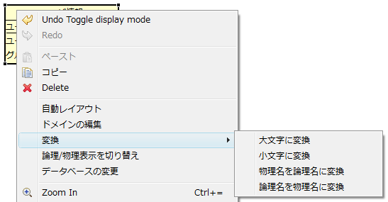

ダイアグラムの右クリック > [変換]から、テーブル名やカラム名の自動変換を行うことができます。 テーブルを選択状態にして実行すると選択したテーブルのみ、 テーブルを選択せずに実行するとダイアグラム内のすべてのテーブルに対して変換を行います。
※論理名・物理名の変換機能は実験的な機能であり、正しく変換できないケースもあります。 また、変換に使用する辞書のカスタマイズなどを行うことはできません。

テーブル、カラムの物理名を大文字に変換します。
テーブル、カラムの物理名を小文字に変換します。
テーブル、カラムの論理名（日本語）から物理名を自動的に設定します。
テーブル、カラムの物意名から論理名（日本語）を自動的に設定します。 データベースからテーブルをインポートする際、この機能によって自動的に論理名が設定されます。